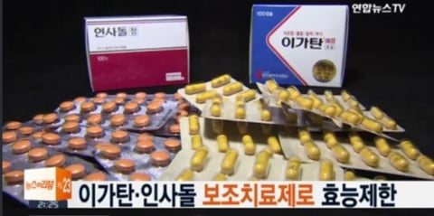

너네들 tv에서 이런 잇몸 튼튼~ 하는
약 광고 본적 많을거임.
근데 이 제품들에 대해서 꼭 알아둬야 하는
존나 중요한 사실들이 있음.
잘 알고 있는 싱붕이들도 많을거다.
일단 둘다 약은 맞는데,
효능은 '치주치료 후 보조치료'임.
2016년에 조용히 바뀜.
그니까 얘네는 잇몸병을 낫게하는 약이라기보단
치과 치료 후 염증/통증 약간 잡아주는 애임.
부실한 근거의 성분도 많다.
(참고용)
리소짐: 세균 세포벽을 분해하는 효소 단백질
단백질이라 먹으면 대부분 소화되기 때문에, 잇몸까지 제대로 작용하는지는 의문
비타민 C, E: 비타민 C가 결핍되면 잇몸 출혈이 생기는 건 팩트(괴혈병). 근데 결핍이 아닌 사람이 더 먹는다고 잇몸이 더 좋아진다는 근거는 약함..
카르바조크롬: 모세혈관을 안정시켜 출혈을 줄인다는 성분인데, 이것도 임상 근거가 약함
옥수수불검화추출물(인사돌): 식물 스테롤 계열. 항염 효과를 주장하지만 이를 뒷받침하는 연구 대부분이 위에서 말한 품질 문제를 안고 있음.
아니 그러면 이거 과대광고 아니냐??
과징금 먹는거 아님?
맞다.
ㅇㄱㅌ은 업무정지 1개월 대신
과징금 7170만원을,
ㅇㅅㄷ은 업무정지 2개월 15일 대신
과징금 2137만 5000원을 먹었다.
(각각 2019년, 2013년 일이라 물가고려 해야함)
(ㅇㄱㅌ은 '잇몸질환 예방, 치료' 효과를 내세운 문구를 썼다가 과징금을 먹었다.)

그렇다고 먹지 말라는건 아니다.
엄연히 향균/소염 효능이 인정된 제품이고
치과 진료 후 보조치료론 좋음 ㅇㅇ
그냥 약에 대해 잘 알아두라는 공익 취지
그러니까싱붕이들은
약에 대한 정보 잘 알아본 후 먹자
이 글은 공개된 보도, 식약처 처분, 학술 논문을 정리한 거임.
특정 제품 먹지 말라는 얘기는 아니니까
복용은 디시 말고 전문가랑 상의해라
출처
푸드투데이 – 의약품 광고 위반 5년간 32건, 아이뉴스24 – 남양유업 과징금 처분, 메디게이트뉴스 – 건기식 허위광고 1만4000건 적발, 처분 0건, 데일리팜 – 무관심을 먹고 자라는 건기식 과대광고, 메디칼타임즈 – 제약사 과징금 '쥐꼬리'
3줄요약
1.ㅇㄱㅌ, ㅇㅅㄷ 둘 다 2016년에
'치료 후 거드는 약'으로 공식 효능이 바뀜.
치료제 아님.
2.둘 다 효능 근거가 부실하다는 지적을 받았고,
광고 문제로 과징금도 맞은 적 있음.
3.잇몸 아프면 약 사기 전에 치과부터 가자!
모르고 걍 먹으면 틀딱소리 들을수도 있다.
만약 이런거 즐겨먹는 가족/친구가 있다면
이 정보을 알려주는건 어떨까?
댓글
수집 당시 댓글 104개
ㅇㅇ · 11.04 18:47:47
유깡술 · 11.04 18:47:54
로지보리자파궁열항탈문장질사내정임낙신태 · 11.04 18:48:41
ㅇㅇ · 11.04 18:50:59
ㅇㅇ · 11.04 18:55:03
· ㅇㅇ · 11.04 19:08:48
· 했제와그랬제 · 11.04 19:36:36
· ㅇㅇ · 11.04 19:37:03
· ㅇㅇ · 11.04 20:10:51
· ㅇㅇ · 11.04 22:56:13
· 맥스웰테슬라 · 11.04 23:21:09
· ㅇㅇ · 11.05 23:09:30
· ㅁㅇ · 11.06 00:03:14
· ㅇㅇ · 11.06 00:23:24
· ㅇㅇ · 11.06 12:38:32
ㅇㅇ · 11.04 19:14:30
· 인생이피곤 · 11.04 19:18:34
ㅇㅇ · 11.04 19:20:18
ㅇㅇ · 11.04 19:21:50
ㅇㅇ · 11.04 19:24:35
· olbersia · 11.04 23:32:58
· ㅇㅇ · 11.06 00:13:08
· ㅇㅇ · 11.06 01:05:23
ㅇㅇ · 11.04 19:24:48
ㅇㅇ · 11.04 19:27:22
소공녀 · 11.04 19:29:52
ㅇㅇ · 11.04 19:40:11
애국은정신병 · 11.04 19:46:27
넝신 · 11.04 19:55:52
둥실라이드 · 11.04 19:56:58
부이 · 11.04 20:09:58
· 부이 · 11.04 20:10:34
낭만원툴 · 11.04 21:25:13
· ㅇㅇ · 11.05 23:05:06
ㅇㅇ · 11.04 21:38:42
맥스웰테슬라 · 11.04 23:20:34
ㅇㅇ · 11.04 23:20:58
olbersia · 11.04 23:33:39
ㅇㅇ · 11.05 02:02:11
땨뗘(봇) · 11.05 23:00:06
ㅇㅇ · 11.05 23:03:29
ㅇㅇ · 11.05 23:04:14
· ㅇㅇ · 11.05 23:40:32
앤드류그레이브스 · 11.05 23:04:18
· 앤드류그레이브스 · 11.05 23:04:26
· 안락사 · 11.05 23:07:51
· 샨테 · 11.05 23:08:55
ㅇㅇ · 11.05 23:04:19
· ㅇㅇ · 11.05 23:06:21
· ㅇㅇ · 11.05 23:10:02
· ㅇㅇ · 11.05 23:11:17
· ㅇㅇ · 11.06 03:38:01
ㅇㅇ · 11.05 23:04:58
· ㅇㅇ · 11.05 23:26:41
ㅇㅇ · 11.05 23:05:04
공정성장 · 11.05 23:06:06
안락사 · 11.05 23:07:39
· 샨테 · 11.05 23:09:17
· 앤드류그레이브스 · 11.05 23:22:02
샨테 · 11.05 23:08:45
· 안락사 · 11.05 23:10:20
· 앤드류그레이브스 · 11.05 23:21:23
ㅇㅇ · 11.05 23:09:52
· ㅇㅇ · 11.05 23:12:16
· ㅇㅇ · 11.05 23:15:31
192.168.* · 11.05 23:11:24
ㅇㅇ · 11.05 23:13:15
· ㅇㅇ · 11.05 23:15:10
ㅇㅇ · 11.05 23:13:18
· ㅇㅇ · 11.05 23:17:00
· ㅇㅇ · 11.05 23:17:37
· ㅇㅇ · 11.06 01:02:12
ㅇㅇ · 11.05 23:13:40
ㅇㅇ · 11.05 23:14:18
ㅇㅇ · 11.05 23:16:44
ㅇㅇ · 11.05 23:25:17
ㅇㅇ · 11.05 23:26:55
ㅇㅇ · 11.05 23:30:33
ㅇㅇ · 11.05 23:34:54
ㅇㅇ · 11.05 23:37:19
ㅇㅇ · 11.06 00:03:15
ㅇㅇ · 11.06 00:14:01
ㅇㅇ · 11.06 00:14:30
환란 전 교회 휴거 · 11.06 00:16:19
ㅇㅇ · 11.06 01:15:31
ㅇㅇ · 11.06 01:57:42
ㅇㅇ · 11.06 01:59:14
ㅇㅇ · 11.06 02:03:25
· ㅇㅇ · 11.06 02:03:33
ㅇㅇ · 11.06 02:19:59
키노시타카즈야 · 11.06 02:44:24
ㅇㅇ · 11.06 02:47:08
ㅇㅇ · 11.06 03:00:21
운빨좆망겜 · 11.06 03:44:14
관드래곤 · 11.06 04:11:36
ㅇㅇ · 11.06 06:22:05
ㅇㅇ · 11.06 06:34:43
ㅇㅇ · 11.06 12:39:30
ㅇㅇ · 11.06 17:24:58
JungNu · 11.06 20:59:05
ㅇㅇ · 11.04 18:46:52
· ㅇㅇ · 11.04 18:49:11
· ㅇㅇ · 11.04 18:50:03
· 범성애자적마인드 · 11.04 19:14:16